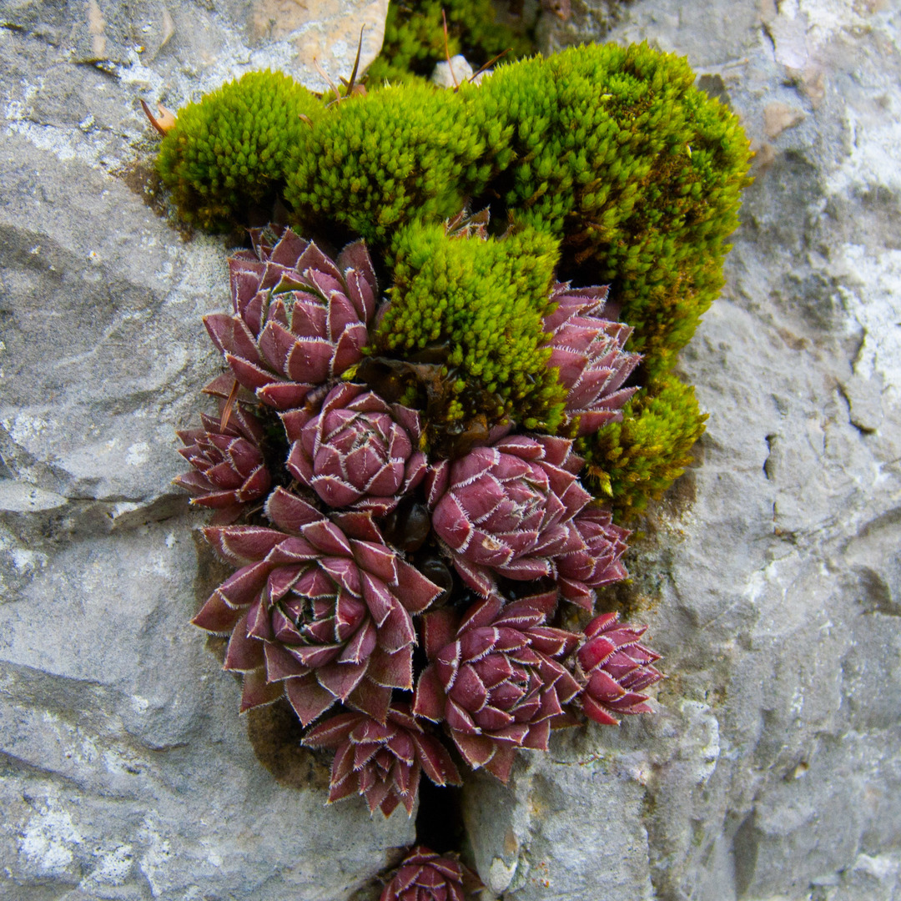

Center
Bei diesem Bild stand die Blüte im Zentrum des Bildes. Es wurde darauf geachtet, dass der Hintergrund nicht allzu sehr vom Motiv ablenkt.
- Severin Kaderli
On the edge
Bei diesem Bild wurde mithilfe von Adobe Lightroom der Hintergrund weniger scharf gemacht und die Farben der Blüte ein wenig kräftiger. Bei der Aufnahme war nämlich die Schärfe des Hintergrundes ein Bisschen zu ablenkend und die Farben waren ein wenig blass.
- Severin Kaderli
Shy

Bei diesem Bild wurde vor allem darauf geachtet, dass der Hintergrund in der Post-Produktion weniger scharf gemacht worden ist. Auf diese Weise lenkt er nicht vom Hauptbild ab.
- Severin Kaderli
Woman in yellow

Dieses Bild zeigt eine Krokus in einem Feld von Maiglöckchen. Das Bild erinnerte an die Szene in Matrix mit der Frau im roten Kleid. In der Nachbearbeitung habe ich die Farbe der Krokus weiter hervorgehoben, sowie den Rest des Felds weiter defokusiert.
- Marius Schär
Sempervivum

Dieses Bild zeigt eine Nahaufname einer Hauswurz. In der Nachbearbeitung wurden einige Makel an der Blüte selber korrigiert, sowie eine grundlegende Farbkorrektur durchgeführt. Während des Fotografieren wurde darauf geachtet, dass die Bildkomposition einigermassen ansprechend wirkt.
- Marius Schär
Trauben
Dieses Bild habe ich geschossen, da es mich an eine Traube erinnert hat. In der Nachbearbeitung wurde eine Farbkorrektur, sowie eine Korrektur der Felsfarbe durchgeführt.
- Marius Schär
Muster Blatt
Bei diesem Bild steht das Muster welches auf dem Blatt ist im Zentrum des Bildes. Während der Bearbeitung wurde darauf geschaut das die Farben des Blattes und des Musters intensiver gemacht werden, damit ein besserer Kontrast vorhanden ist und das Muster besser zu sehen ist.
- Tobias Bürgi
Green Hand

In diesem Bild sieht man grüne Blätter welche an eine Hand erinnern sollen. Bei der Bearbeitung habe ich darauf geachtet, dass das Bild einen guten Kontrast zwischen den Blättern und dem brauen Hintergrund hat.
- Tobias Bürgi
Wassertropfen

In diesm Bild steht das Zusammenspiel zwischen dem Wassertropfen und dem Blütenblatt im Vordergrund. Bei der Bearbeitungen wurden die farben ein bisschen intensiever gemacht, damit das Bild interessanter wirkt.
- Tobias Bürgi